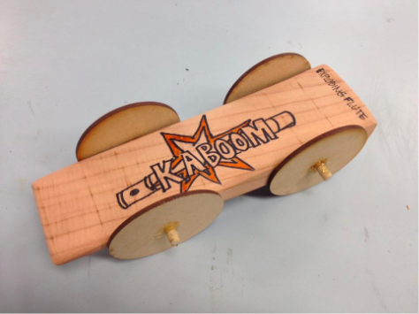
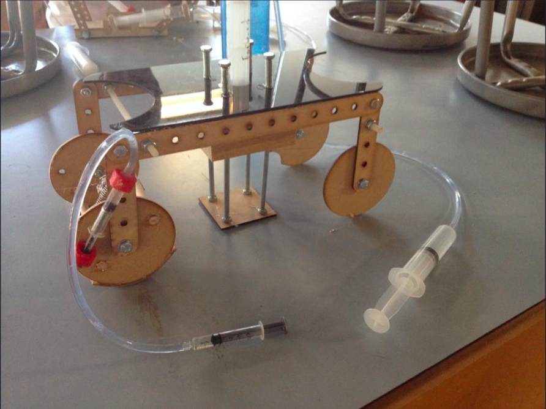

For the pinewood derby car project, my partner and I researched designs, then applied what we learned, by spending the rest of the class
sketching rough drafts. We then discussed the designs and spent the next two classes cutting, sanding, and putting our derby car together using redwood, dowels, and MDF.
We were able to place 3rd.
1 / 4

2 / 4

For the pneumatics, hydralics, and linkages projects, my partner and I were prompted to create a machine that would go up a metal ramp and knock down a pile of blocks. We researched, protyped, and built our design in 5 classes. We used a bell crank which can change the angel of motion (input, output) to move the wheels. We then used pneumatics to move linkages and to lift the machine up and down to reset the syringe that will move the linkage.
3 / 4

For our final projects, we were tasked to create anything we wanted as long as we applied one of the following materials we learned from class. I decided to create a kinetic sculpture that used gears. It would also have multiple CNC parts (laser cut), and be motor-driven. I used MDF, clear acrylic, acrylic dowell, and a motor.
4 / 4
Video of my final project running.